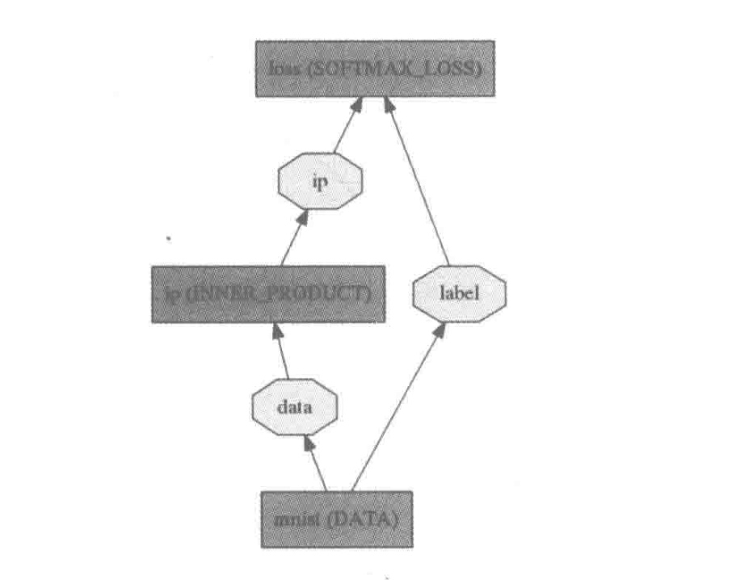
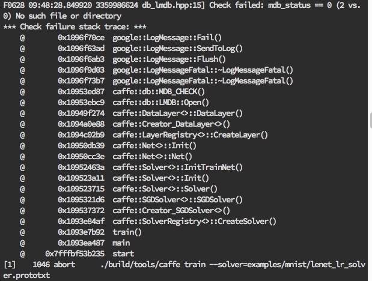
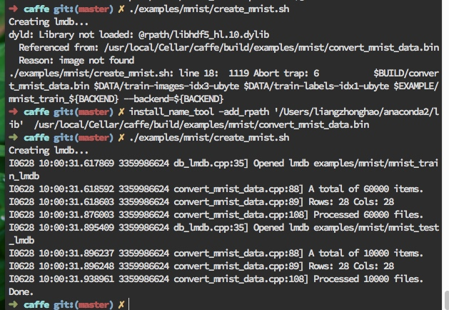
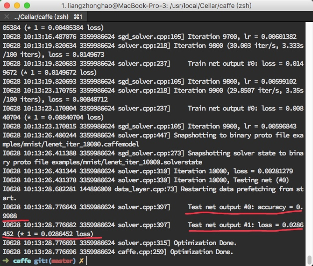
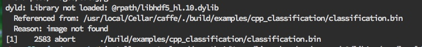
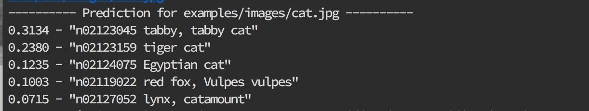
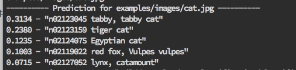
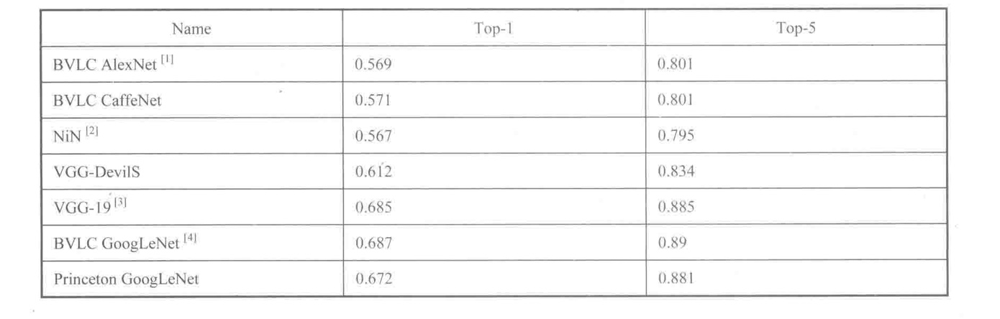

我们之前学习过,一个完整的深度学习系统最核心的两个方面是数据和模型。今大我们 主要关注模型。一个深度学习模型通常由三部分参数组成：
- 可学习参数（Leamable Parameter),又称可训练参数、神经网络权系数、权重，其数值由模型初始化参数、误差反向传播过程控制,一般不可人工干预.
- 结构参数（Archetecture Parameter),包括卷积层/全连接层/下采样层数目、卷积核数目、 卷积核大小等描述网络结构的参数,一旦设定好,在网络训练阶段不能更改;值得注意的是,训练阶段网络结构参数和预测阶段结构参数很可能不同。
- 训练超参数（Hyper-Parameter),用来控制网络训练收敛的参数，训练阶段可以自动或手动调节以获得更好的效果，预测阶段不需要该参数.
在Caffe中，一个模型的三部分参数分别由不同模块定义和实现:
- 可学习参数在内存中使用Blob对象保持，必要时以二进制ProtoBuffer文件(*.caffemodel)形态序列化并存储于磁盘上，便于进一步微调（finetune,又称精调）、共享（例如参数服务器Parameter Server, PS)、性能评估（benchmark)。
- 结构参数使用ProtoBuffer文本格式（*.prototxt)描述，网络初始化时通过该描述文件构建Net对象、Layer对象形成有向无环图结构，在Layer与Layer之间、Net输入源和输出阱均为持有数据和中间结果的Blob对象。
- 训练超参数同样使用ProtoBuffer文本格式（*.prototxt)描述，训练阶段利用该描述文件构建求解器（Solver)对象，该对象按照一定规则在训练网络时自动调节这些超参数值。
我们在MNIST例子中对LeNet-5模型稍微修改一下.变成逻辑回归（Logistic Regression, LR)分类器。

复制一份examples/mnist/lenet_train_test.prototxt,重命名为 lenet_lr.prototxt，修改内容如下:
name: "LeNet"
layer {
name: "mnist"
type: "Data"
top: "data"
top: "label"
include {
phase: TRAIN
}
transform_param {
scale: 0.00390625
}
data_param {
source: "examples/mnist/mnist_train_lmdb"
batch_size: 64
backend: LMDB
}
}
layer {
name: "mnist"
type: "Data"
top: "data"
top: "label"
include {
phase: TEST
}
transform_param {
scale: 0.00390625
}
data_param {
source: "examples/mnist/mnist_test_lmdb"
batch_size: 100
backend: LMDB
}
}
layer {
name: "ip"
type: "InnerProduct"
bottom: "data"
top: "ip"
param {
lr_mult: 1
}
param {
lr_mult: 2
}
inner_product_param {
num_output: 20
weight_filler {
type: "xavier"
}
bias_filler {
type: "constant"
}
}
}
layer {
name: "accuracy"
type: "Accuracy"
bottom: "ip"
bottom: "label"
top: "accuracy"
include {
phase:TEST
}
}
layer {
name: "loss"
type: "SoftmaxWithLoss"
bottom: "ip"
bottom: "label"
top: "loss"
}
复制一份examples/mnist/lenet_solver.prototxt，重命名为lenet_lr_solver.prototxt,修改内容
如下:
# The train/test net protocol buffer definition
net: "examples/mnist/lenet_lr.prototxt"
# test_iter specifies how many forward passes the test should carry out.
# In the case of MNIST, we have test batch size 100 and 100 test iterations,
# covering the full 10,000 testing images.
test_iter: 100
# Carry out testing every 500 training iterations.
test_interval: 500
# The base learning rate, momentum and the weight decay of the network.
base_lr: 0.01
momentum: 0.9
weight_decay: 0.0005
# The learning rate policy
lr_policy: "inv"
gamma: 0.0001
power: 0.75
# Display every 100 iterations
display: 100
# The maximum number of iterations
max_iter: 10000
# snapshot intermediate results
snapshot: 5000
snapshot_prefix: "examples/mnist/lenet"
# solver mode: CPU or GPU
solver_mode: CPU
然后运行训练命令,在命令行输入:
./build/tools/caffe train --solver=examples/mnist/lenet_lr_solver.prototxt
但是发现报错了:

通过上述错误描述,发现是lmdb数据文件没有的问题....
运行./examples/mnist/create_mnist.sh脚本,将之前下载过的数据转化成lmdb形式.中间的报错和解决如截图所示:

我们成功获得到了lmdb文件.
再次执行训练命令:
master) ✗ ./build/tools/caffe train --solver=examples/mnist/lenet_lr_solver.prototxt
然后就发现已经开始训练了.
最后得到结果如图所示:

经过训练，可以获得在测试集上分类准确率为0.9908的模型。相比LeNet-5而言准确率降低了，这也符合直觉，因为将模型简化后参数变少，层数变少，网络表达能力变差。我们今天不关注准确率，只关注模型的表达方式。
内存中的表示
从运行的log文件可以追踪模型是如何从prototxt描述变为内存中表示方式的,
看到这行:
Creating training net from net file:
examples/mnist/lenet_lr.prototxt
// ...不要在意这些细节
Initializing net from parameters:
追踪solver.cpp的第87行，看到如下代码：
//前面省略..
//在solver.hpp 中声明了SolverParameterparam_
//它是ProtoBuffer工具生成的结构体,用来解析lenet_lr_solver.prototxt
if (param_.has_net()) {
LOG_IF(INFO, Caffe::root_solver()) //打印log
//这里param_.net()会返回examples/mnist/lenet_lr.prototxt
<< "Creating training net from net file: " << param_.net();
ReadNetParamsFromTextFileOrDie(param_.net(), &net_param);
}
磁盘上表示
Caffe使用ProtoBuffer二进制文件有最小文件尺寸，并由ProtoBuffer工具自动生成高效的序列化/反序列化接U口(多语言支持，包括C++、Java、Python)，以及可读性好、兼容二进制文件的文本格式.
我们仍然从运行log查找线索:
Snapshotting to binary proto file
examples/mn is t/lenet__iter_l 0000. caffemodel
Snapshotting solver state to binary proto file examples/mnist/Xenet_iter_10000.solverstate
其中,.caffemodel文件是在特定训练间隙保存的二进制文件，包含当前网络各层的权值状态;而.solverstate是与.caffemodel一起产生的二进制文件，包含从上次停止点恢复训练模型所需的信息。我们具体看下列代码：
追踪solver.cpp的第445行,上下文信息如下所示:
template <typename Dtype>
string Solver<Dtype>::SnapshotToBinaryProto() {
//得到模型文件名
string model_filename = SnapshotFilename(".caffemodel");
LOG(INFO) << "Snapshotting to binary proto file " << model_filename;
NetParameter net_param;
//将net_转换为Netparameter
net_->ToProto(&net_param, param_.snapshot_diff());
///写入 ProtoBuffer 二进制文件，这里是 lenet_iter_10000.caffemodel
WriteProtoToBinaryFile(net_param, model_filename);
return model_filename;
}
追踪sgd_solver.cpp的259行:
template <typename Dtype>
void SGDSolver<Dtype>::SnapshotSolverStateToBinaryProto(
const string& model_filename) {
SolverState state; //创建一个序列化对象
state.set_iter(this->iter_); //记录当前的迭代次数
state.set_learned_net(model_filename); //记录网络描述文件
state.set_current_step(this->current_step_); //记录当前步进值
state.clear_history(); //清空容器,准备接纳新内容
for (int i = 0; i < history_.size(); ++i) {
// Add history 记录权值的历史信息
BlobProto* history_blob = state.add_history();
history_[i]->ToProto(history_blob);
}
string snapshot_filename = Solver<Dtype>::SnapshotFilename(".solverstate");
LOG(INFO)
<< "Snapshotting solver state to binary proto file " << snapshot_filename;
//将SolverState对象写入二进制文件（*.solverstate)
WriteProtoToBinaryFile(state, snapshot_filename.c_str());
}
从磁盘上将模型、求解器状态文件载入内存的过程与上面代码刚好相反，我们可自行跟踪阅读。
Caffe Modal Zoo
对于前面我们运行的简单模型，可以从头训练（from scrash)。然而，对于规模更大、结构更复杂的模型，从头训练需耍解决两个问题：首先是硬件计算能力。模型训练十分消耗计算资源，使用普通计算机需要相当长的时间，不经济：而且世界上每个研究机构都从头训练，重复性工作太多，不环保。其次是调参能力。同样的模型设计，可能每个人训练结果都不一致，中间调参是项技术活，控制不当会引起训练发散或训练不充分，无法达到理想的分类效果。
为了解决上述问题,Caffe Model Zoo则提供了一个分享模型的平台，世界各地的研究人员都可以把自己的训练成果共享给社区中更多的人使用，节省人力、物力。
今天我们也站在前人的肩膀上，运行一个基于已训练模型的图片分类例程。我们首先需要下载几个文件。
下载meta数据到当前目录:
➜ caffe git:(master) ✗ cd data/ilsvrc12
➜ ilsvrc12 git:(master) ✗ ./get_ilsvrc_aux.sh
Downloading...
--2017-06-29 10:54:55-- http://dl.caffe.berkeleyvision.org/caffe_ilsvrc12.tar.gz
Resolving dl.caffe.berkeleyvision.org... 169.229.222.251
Connecting to dl.caffe.berkeleyvision.org|169.229.222.251|:80... connected.
HTTP request sent, awaiting response... 302 Found
Location: http://202.114.49.110/cache/9/02/berkeleyvision.org/6b5ff42be9dd0690a814318a14401a7f/caffe_ilsvrc12.tar.gz [following]
--2017-06-29 10:54:56-- http://202.114.49.110/cache/9/02/berkeleyvision.org/6b5ff42be9dd0690a814318a14401a7f/caffe_ilsvrc12.tar.gz
Connecting to 202.114.49.110:80... connected.
HTTP request sent, awaiting response... 200 OK
Length: 17858008 (17M) [application/octet-stream]
Saving to: ‘caffe_ilsvrc12.tar.gz’
caffe_ilsvrc12.tar. 100%[===================>] 17.03M 9.67MB/s in 1.8s
2017-06-29 10:54:58 (9.67 MB/s) - ‘caffe_ilsvrc12.tar.gz’ saved [17858008/17858008]
Unzipping...
Done.
下载caffenet模型:
➜ ilsvrc12 git:(master) ✗ cd ../../models/bvlc_reference_caffenet
➜ bvlc_reference_caffenet git:(master) ✗ wget http://dl.caffe.berkeleyvision.org/bvlc_reference_caffenet.caffemodel
--2017-06-29 11:14:10-- http://dl.caffe.berkeleyvision.org/bvlc_reference_caffenet.caffemodel
Resolving dl.caffe.berkeleyvision.org... 169.229.222.251
Connecting to dl.caffe.berkeleyvision.org|169.229.222.251|:80... connected.
HTTP request sent, awaiting response... 200 OK
Length: 243862418 (233M) [application/octet-stream]
Saving to: ‘bvlc_reference_caffenet.caffemodel’
bvlc_reference_caffen 100%[=========================>] 232.56M 129KB/s in 21m 50s
2017-06-29 11:36:01 (182 KB/s) - ‘bvlc_reference_caffenet.caffemodel’ saved [243862418/243862418]
回到根目录执行:
➜ caffe git:(master) ✗ ./build/examples/cpp_classification/classification.bin \
models/bvlc_reference_caffenet/deploy.prototxt \
models/bvlc_reference_caffenet/bvlc_reference_caffenet.caffemodel \
data/ilsvrc12/imagenet_mean.binaryproto \
data/ilsvrc12/synset_words.txt \
examples/images/cat.jpg
发现报错:

执行:
➜ caffe git:(master) ✗ install_name_tool -add_rpath '/Users/liangzhonghao/anaconda2/lib' /usr/local/Cellar/caffe/./build/examples/cpp_classification/classification.bin
再次运行上面命令,得出结果:

命令行解释如下:
➜ caffe git:(master) ✗ ./build/examples/cpp_classification/classification.bin \ //二进制程序名
models/bvlc_reference_caffenet/deploy.prototxt \ //模型描述文件
models/bvlc_reference_caffenet/ bvlc_reference_caffenet.caffemodel \ //*.caffemodel模型权值文件
data/ilsvrc12/imagenet_mean.binaryproto \ //图像均值文件
data/ilsvrc12/synset_words.txt \ //图像类别标签信息
examples/images/mouse.png //输入待分类图像
打开输入图像examples/images/cat.jpg:

命令行输出的预测结果为:

可见给出了5个预测结果，按照概率分布从高到低的顺序排列。这种预测结果称为Top-5预测结果，对当前样本而言，分类准确率为5项之和。除Top-5预测结果之外，还有Top-3、 Top-1等预测结果，对当前样木的分类正确率分别为0.6749、0.3134。
分类准确率不仅与验证数据集有关，与模型的关系也非常密切。我们在Caffe Model Zoo上找到几个模型在ILSVRC 2012验证数据集上的分类效果，如图所示。

可见单模型分类性能最好的是BVLC GoogLeNet。
通过掌握上面的内容，并学习其他更多深度学习模型的设计和训练方法.